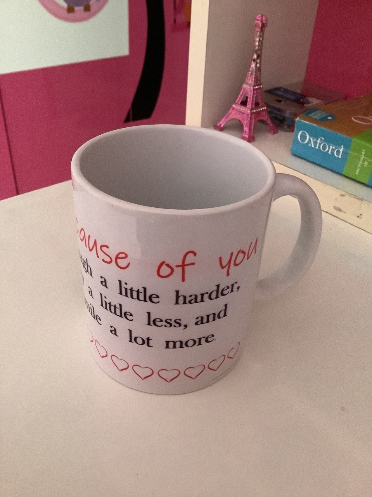
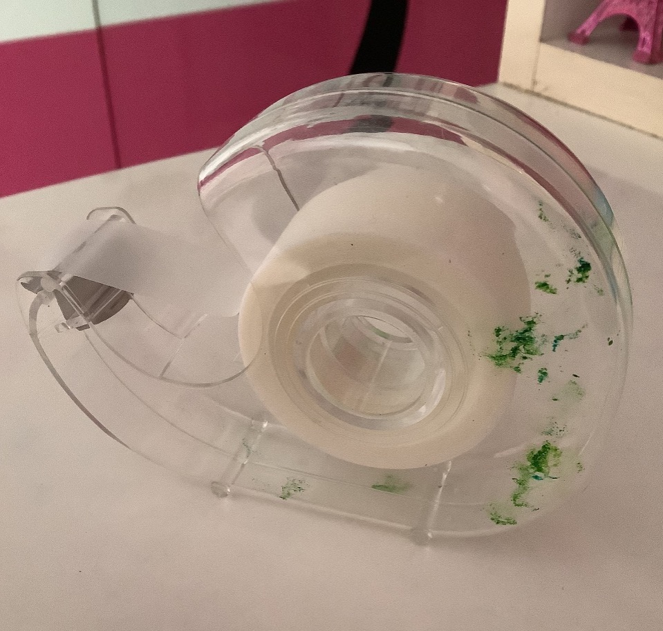
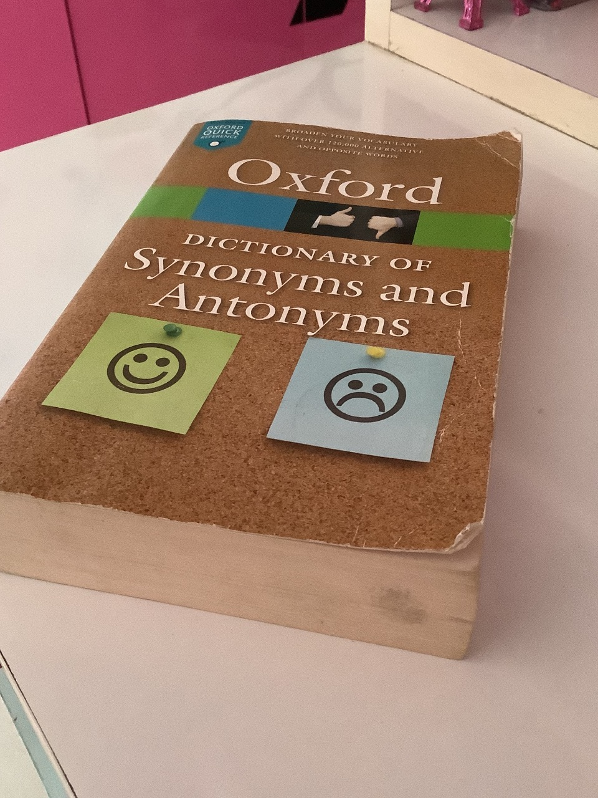

CASE STUDY BETWEEN GOOGLE LENSE AND MOBILENET
GOOGLE LENS
vs
MOBILENET
Output on- GOOGLE LENS-
Mug
Output on- MOBILENET MODEL
Coffee Mug
Result
MobileNet Model is more accurate
Test Image-

Output on- GOOGLE LENS-
Scissors
Output on- MOBILENET MODEL-
Stethoscope
Result
Google Lens is more accurate
Test Image-

Output on- GOOGLE LENS-
Lid Bowl
Output on- MOBILENET MODEL-
Petri Dish
Result
Google Lens is more accurate
Test Image-

Output on- GOOGLE LENS-
Oxford Dictionary
Output on- MOBILENET MODEL-
Book
Result
Google Lens is more accurate
Test Image-

Overall Result
I tested 5 objects. Google Lens got 4 of them more accurately while MobileNet got 1 more accurately.So, Google Lens is more accurate